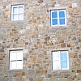

Lé Vièr Châté fut bâti au c'menchment du treizième siècl'ye pouor protégi Jèrri d'attaques dé la côte Nouormande du Cotentîn.
Lé nom Français dé Mont Orgueil lî fut donné au tchînzième siècl'ye, viyant qu'i' 'tait si ordgilleux sus san mont - ou qu'i 'tait l'ordgi dé Jèrri.
Ouaithe qué l'Châté fûsse èrbâti, amendé et renforchi duthant l's années, i'n'tait pon pôssibl'ye dé défendre lé Châté contre les canons. La nouvelle technologie du seizième siècl'ye l'avait rendu innutile.
La décision fut prînse dé bâti un nouvieau châté dans la Baie d'la Ville sus l'Islet, où'est qu'la vielle Abbaye dé Saint Hélyi s'trouvait. J'viyons lé Châté Lîzabé là achteu.
Nou-s'avait l'plian dé dêtruithe lé Vièr Châté pouor faithe sèrvi les pièrres dans la bâtithie du nouvieau châté, mais l'Gouvèrneux, Walter Ralegh, dît qu'i' s'sait un pitchi d'lé pitchi bas, viyant qué ch'tait eune mangnifique vielle fortérêsse. Ch'est lî don tchi saûvit lé vièr bâtisse qué j'viyons à Gouôrray achteu.
Ch'tait eune vielle tradition pouor les gens d'aller au Châté à la St. George (lé 23 d'Avri) pouor vîsiter la chapelle dé St. George tch'est dans l'Châté. Ch'tait lé seul jour quand tchi qu'les gens pouvaient vîsiter l'Châté - et ch'tait eune fête hardi populaithe. Des mâsses dé gens v'naient dé toutes les carres pouor célébrer la journée. Pus tard la fête fut transféthée au Lundi d'Pâques - mais chutte couôteunme mouothit au mitan du dgiêx-neuvième siècl'ye.
Duthant les Dgèrres Révolutionnaithes Françaises, l'Amitha Ph'lippe d'Auvergne faîsait sèrvi l'Châté coumme centre pouor ses activités d'sèrvice ségrét.
En 1846, la Reine Victoria et l'Prînce Albert vîsitîtent lé Châté.
En 1907, lé gouvernément Britannique donnit lé Châté ès Êtats d'Jèrri coumme monûment historique. Après sept chents ans, il avait pèrdu toute sa sîngnificâtion militaithe - ou ch'est qu'les gens criyaient, mais l's Allémands n'taient pon du même avis. Duthant l'Otchupâtion, i' contruîsîtent des bunkers dans l'Châté qu'nou peut acouo vaie aniet.
Quand l'Rouai George V vîsitit l'Châté en 1921, i' fut salué en Jèrriais, et i' y'avait étout eune banniéthe tchi liesait: Dex Ayde a nostre Roy.
Achteu l'înmage du Vièr Châté appathaît dans d's annonces pouor les vacanches en Jèrri, sus des cartes postales, des dotchuments, la publyicité... S'lon bein des gens, ch'est l'symbole dé l'Île.
 |
 |  |
 |
Viyiz étout:

{kind=link}